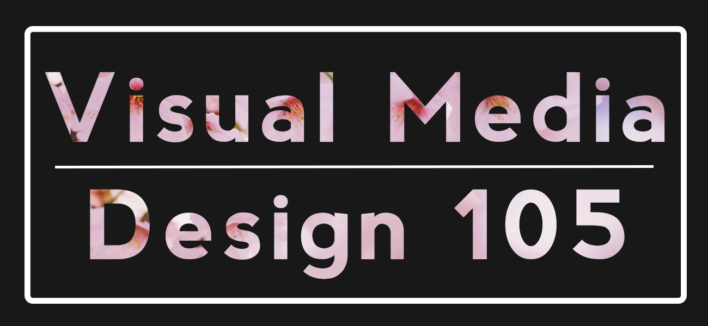

Home | Raster | Vector | Time Base Media | Print Layout | Social Media
Hello and thanks for checking out my page! My name is Jennifer Wong and I
am currently a student at CCSF. This was my first time taking a course for
digital media skills and using Adobe programs aside from Lightroom. My
interests include video games, sewing, drawing, and ocasionally photography.
I'm also open to meeting and talking to people with common interests!
This website that I've created is a collection of the projects I have
done throughout the semester during my time in VMD 105. I hope that you
enjoy my work and if there's anything that stands out or would like to
give feedback on, feel free to contact me.
Photography Fall 2019